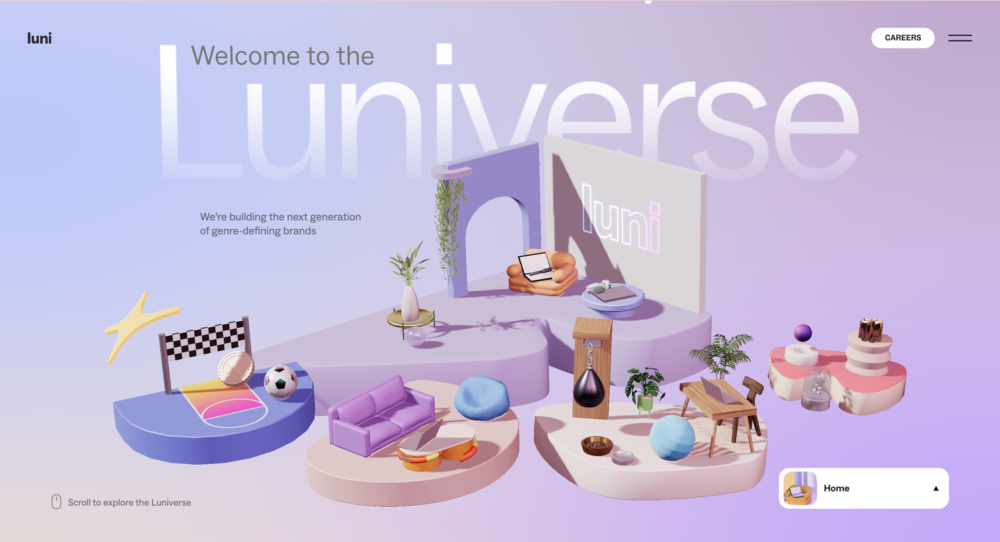

From the list,I selected the fourth link, Luni, as my interactive web research project. Below are my reviews based on my experience interacting with it.

Response
to the
prompts
01 What was the first thing you paid attention to when interacting with the experience?
The first thing I noticed was its distinctive visual style, which combines a clean, minimal layout with a playful and slightly futuristic aesthetic. At the same time, the floating 3D scenes immediately draw attention, adding depth and interactivity that encourage exploration and make the experience feel dynamic rather than static.
02 Spend two minutes with the experience and create a list of each of your discrete actions.
During my two-minute interaction, I began on the homepage by moving my cursor around to explore how the interface responded. I hovered over each floating 3D scene to observe their interactive reactions, then clicked on one of them. This triggered a transition that felt like entering or zooming into the scene, revealing a more detailed environment. Within this space, I experimented by clicking on smaller objects, some of which responded interactively. Then I selected the “discover” option to access a content page. I briefly scrolled through the material and slided to the top and click the close button to go back to the previous page. After that, I used the navigation menu in the bottom right corner to return to the homepage. I also discovered that scrolling upward allowed me to move sequentially through different scenes. I repeated a pattern of interacting with elements, entering content pages, briefly browsing, and returning, while gradually exploring each section and testing how different interface elements responded.
03 What part of the experience did you spend the most time engaging with?
Throughout the experience, I spent the most time exploring interactions with small objects in each 3D scene. When I clicked or hovered over them, some elements responded in subtle or unexpected ways. This sparked my curiosity and prompted me to try various interactions within each environment. Compared to simply switching between different areas, these micro-interactions were more engaging and satisfying, which naturally made me want to spend more time exploring each scene.
04 What was the most common action in your two minute interaction with the experience?
The most common action was scrolling, as the site relies heavily on scroll-triggered transitions and parallax effects to reveal its content and narrative layers.
05 What is your impression of the intended primary goal of the interactive experience?
My impression is that the primary goal of the interactive experience is to immerse users in the “Luniverse”, encouraging users to explore the space and discover content organically. This immersive approach allows users to engage with the brand’s identity and creative output in a more intuitive and experiential manner.
06 How does the interactive experience communicate this primary goal?
The interactive experience communicates this primary goal through a combination of its visual design, interaction mechanics, and transition effects.
The dreamlike and slightly futuristic aesthetic, along with the construction of immersive 3D scenes, establishes a strong sense of spatial depth and atmosphere. Smooth transitions, such as zooming into scenes, reinforce the feeling of entering a continuous environment rather than navigating separate pages. In addition, micro-interactions between the cursor and scene elements, as well as interface components, encourage active engagement and exploration, allowing users to experience the “Luniverse” in a more intuitive and immersive way.
07 What is your impression of how the experience should be interacted with over time? (For how long and how many different times)
The experience seems to be designed for short but repeatable interactions. During a single visit, users may spend a few minutes exploring different 3D scenes and interacting with elements. However, because the site contains multiple sections and encourages free exploration, users are likely to return and explore more over time. It does not follow a fixed path, but instead allows users to engage with it in a flexible and exploratory way.
08 How does the interactive experience communicate how it should be interacted with over time?
The experience communicates this through its open structure and interaction design. There is no fixed path or clear beginning and end, which suggests that users can explore the site freely at their own pace. The use of multiple 3D scenes, scrolling transitions, and easy navigation between sections encourages users to move in and out of different parts of the experience.
09 What other media forms (digital or otherwise) does the experience reference?
The experience references several media forms, including video games, editorial design, and creative studio websites. The interactive 3D scenes and exploratory navigation resemble game environments, encouraging users to move through different spaces. At the same time, the content pages—especially in sections like “Luni Life”—are presented in a way similar to fashion magazines or editorial photo spreads, with strong visual emphasis and curated imagery. Additionally, the navigation interactions, such as hovering over menu items to reveal images, feel similar to editorial previews or visual indexes. Together, these references create a hybrid experience that combines exploration, visual storytelling, and brand presentation.
10 What does this reference/s communicate to you about how you should act when engaging with your research experience?
These references signal that I should interact with the site as an observer of an aesthetic "world," moving slowly and deliberately to appreciate the visual transitions rather than rushing to find specific data points.
11 What does this reference/s communicate to you about how you should feel when engaging with your research experience?
These references suggest that I should approach the experience with curiosity, exploring it in different ways rather than following a fixed path. It feels as if the “Luniverse” is an unknown digital planet, encouraging me to navigate through it, discover its details, and experiment with its interactions. This creates a sense of playful exploration, where I am not just using a website, but actively exploring a designed world.
12 What is the most frustrating part of the interaction to you and what makes that part frustrating?
The most frustrating part of the interaction was navigating back from the content pages. After scrolling through a section, there was no immediately visible way to return, and I only noticed the close button after scrolling back to the top. This created a sense of unclear navigation where it is not always obvious where interactions will lead. As a result, the flow of the experience felt slightly disrupted and less intuitive.
13 What is the most satisfying part of the interaction to you and what makes that part satisfying?
The most satisfying part is the perfect synchronization between the mouse movement and the 3D model’s rotation, as the tactile responsiveness creates a sense of direct physical control over a complex digital object.
Meilin Chen (Elaine)
S4151128